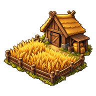
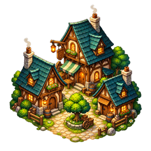
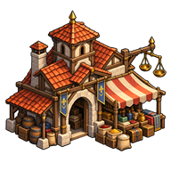

Règles du jeu
Ressources, production et commerce
Produire, stocker, commercer et transporter les moyens de l’aventure.

Les règles de ce thème
Stocks et production
Les lieux produisent selon leurs définitions, leur population, leurs bâtiments et leur état. La production avance par cycles officiels et reste soumise aux capacités de stockage et aux pauses. Garder plusieurs écrans ouverts ne crée pas plusieurs revenus.
Le stock d’un lieu et les possessions du héros sont distincts. Collecter, déposer et réserver des matériaux demandent les permissions et la place dans la destination.
Marché et imports
Le marché vend ou achète les lots disponibles. Prix, quantités et imports peuvent dépendre du lieu et de son comptoir ; la revente ne rapporte pas le prix d’achat. Forge et rayons d’équipement sont des services distincts.
Construire un bâtiment peut ouvrir un nouveau rayon marchand, mais ne réinitialise pas les achats déjà effectués dans les autres rayons.
Impôts
Les lieux imposables accumulent une réserve d’or au rythme des cycles de production.
| Élément | Valeur ou règle |
|---|---|
 | 1 habitant ajoute 1 or au plafond |
| Chaque niveau ajoute 2 or au plafond | |
 | 1 % du plafond par cycle |
 | Montant entier disponible ; fractions conservées |
Le plafond est la population plus deux fois la somme des niveaux des bâtiments économiques. Une réserve pleine cesse de croître. Le contrôleur collecte sur place ; en expert, une collecte réussie réduit le contentement selon le montant.
Exemple : un village et sa ferme
Avec 20 habitants et une ferme niveau 2, le plafond est 20 + 2 × 2 = 24 or. Le revenu est de 0,24 or par cycle.
Dans cet exemple à situation constante, dix cycles donnent 2,4 or : une collecte retire 2 or et laisse 0,4 or en réserve.
Population et spécialistes
Les spécialistes peuvent être recrutés, transportés puis installés selon les services et missions. Leurs bonus dépendent de leur fiche et de leur affectation, jamais de leur portrait.
La population influence développement et services. Une expédition qui emporte des habitants et une installation de travailleur ont des conséquences persistantes sur le lieu.
Les PNJ, officiers, personnages de quête et populations ne sont pas des marchandises du marché. Leur recrutement, transport ou remise passe par les interactions dédiées, pas par l’achat ou la revente ordinaires.
Prospection
Un poste de prospection prépare une expédition avec un spécialiste et ses moyens. Le service demande notamment cinq habitants, au moins cinq vivres et un outil d’exploration ; bière et chevaux peuvent modifier la mission.
L’expédition est un groupe autonome avec provisions, découvertes et retour. Habitants et spécialiste ne reviennent qu’une fois, selon son issue. Le monde initial ne fournit pas forcément de zones à prospecter : le scénario doit les rendre disponibles.
Convois et réseau de la capitale
Les convois acheminent des stocks dans le monde. Le dessin de la charrette ne montre pas le chargement exact : consultez sa fiche.
Certains scénarios emploient un réseau d’exploitations et une capitale qui dépense réellement ses ressources. Ce réseau et les événements de reconquête ne sont pas une règle universelle de toutes les parties.